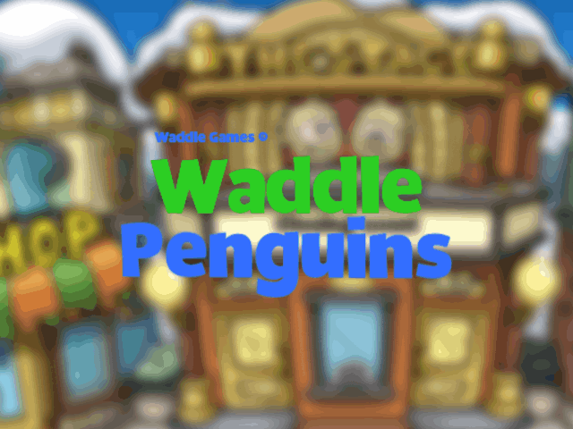
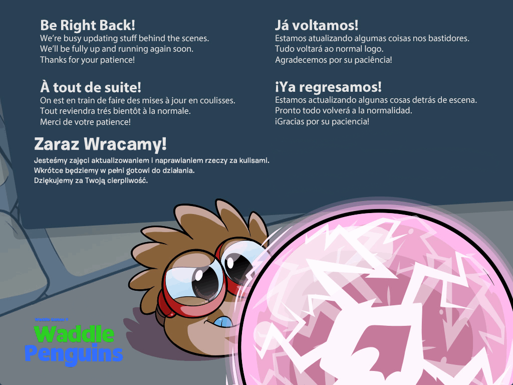
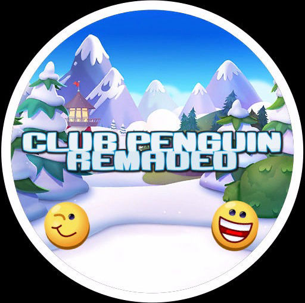

Choose the version of Waddle Penguins you want to play!

AS2

AS3*

CP Remaded**
*AS3 is planned to release in March/April 2021. **CP Remaded is a CPPS owned by Waddle Games. It is a AS2 CPPS, that uses only 2007-2011 files, unlike AS2 WP. (AS2 WP uses 2012-2014 files.) All CPPS'es here are owned by Waddle Games.